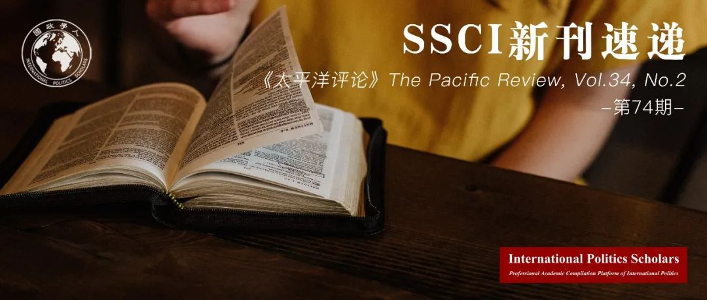

收录于合集 #新刊速递 123个

期刊简介
The Pacific Review《太平洋评论》是太平洋地区研究的主要平台，作为跨学科期刊，其宗旨和目标为打破研究领域之间以及学术界、新闻界、政府和商界之间的壁垒，重点关注政策问题。根据Journal Citation Reports显示，2019年该刊的影响因子为1.633，在区域研究类SSCI期刊中排名11/77，在国际关系类SSCI期刊中排名第35/95。
本期编委
【编译】 吴天麟 李源 朱晓洁 杨稚珉 张曼娜
【审校】 张曼娜 朱晓洁 杨稚珉 李源 吴天麟
【排版】 董诗
【美编】 李九阳

本期目录
1.中国西南地区的“一带一路”倡议：云南省的回应
The belt and road initiative in Southwest China: responses from Yunnan province
2.与乌玛共舞：纳吉布执政时期马来西亚对外政策中的伊斯兰教
Dancing with the Ummah: Islam in Malaysia’s foreign policy under Najib Razak
3.中国区域贸易协定的演变：权力动态与亚太的未来
The evolution of China’s regional trade agreements: power dynamics and the future of the Asia-Pacific
4.观念与政策转变：在区域主义与跨区域主义偏好上的日韩差异
Ideas and policy transformation: why preferences for regionalism and cross- regionalism diverged in Japan and Korea
5.新兴经济体将环境与贸易相联系:韩国制定绿色自由贸易协定的雄心
Linking trade and environment in emerging economies: Korea’s ambition for making green free trade agreements
01
中国西南地区的“一带一路”倡议： 云南省的回应
【题目】 The belt and road initiative in Southwest China: responses from Yunnan province
【作者】 Dr Tim Summers，香港中文大学中国研究中心讲师、英国皇家国际事务研究所“Chathnam House”的亚太地区高级研究咨询员。
【摘要】 自2013年末以来，“一带一路”倡议一直备受关注。大部分观点认为“一带一路”倡议体现了现任中国领导人对经济、地缘政治等全球议题的看法，又或者是中国企图重塑全球化的表现。迄今为止，现有研究较少关注“一带一路”倡议在国内层面和次国家层面的动态。本文在审视省级政策文件和政策研究的基础上，探讨了云南省的政策制定者在面对“一带一路”倡议时的回应方式，以及这些回应对“一带一路”倡议实施和形成过程产生怎样的影响。本文认为云南省将促进外向型发展作为对“一带一路”倡议的主要回应，并围绕将云南省打造成中国进入东南亚和南亚地区的支点这一思路展开。此省级发展战略受到云南省原有的政策目标塑造，反映了当地政策的连贯性而非变动性。这符合把“一带一路”倡议解读为一种“综合性”政策，各省行为体可以在其中竞争影响力，或在国家战略的背景下，在实现地方目标上取得进展。本文的结论是，在云南省与“一带一路”倡议的案例中，省级政府与中央政府的目标广泛一致表明，云南省并没有忽略国家政策目标，相反地它扮演了政策“影响者”和“政策解读者”的角色。
【原文】 The Belt and Road Initiative (BRI) has been the subject of extensive analysis since late 2013. Most of this views it as a manifestation of China’s approach to global issues under Xi Jinping, whether economic, geopolitical, or as a bid to reshape globalization. There has so far been less research into the domestic dynamics of the BRI, including at the sub-national level in China. Based primarily on an examination of provincial-level policy documents and research, this paper explores the ways in which policy makers in the southwestern province of Yunnan have responded to the BRI, and what this might mean for the implementation and shaping of the initiative. It identifies the promotion of externally oriented development as the main response in Yunnan to the BRI, structured around the idea of making the province a ‘pivot’ to south and southeast Asia. This provincial-level response is shaped by pre-existing policy goals in Yunnan and reflects more continuity than change in policy substance. This is consistent with interpretations of the BRI as an ‘omnibus’ policy which can incorporate multiple objectives and act as a framework within which provincial actors can compete for influence or which they can use to make progress towards achieving local objectives in the context of national strategy. The paper concludes that in the case of Yunnan and the BRI, broad alignment between provincial and central government objectives suggests that on this issue, Yunnan is more of an ‘influencer’ and ‘interpreter’ than ‘ignorer’ of national policy goals.
【编译】 吴天麟
【校对】 杨稚珉
【审核】 李源
02
与乌玛共舞：纳吉布执政时期 马来西亚对外政策中的伊斯兰教
【题目】 Dancing with the Ummah: Islam in Malaysia’s foreign policy under Najib Razak
【作者】 Prashant Waikar, 南洋理工大学拉惹勒南国际研究院高级研究员；Mohamed Nawab Mohamed Osman，南洋理工大学拉惹勒南国际研究院助理教授；
Rashaad Ali，马来西亚槟城州巴东埔地区议员办公室。
【摘要】 本文分析了伊斯兰教在纳吉布执政时期马来西亚对外关系中的作用。虽然大多数学者承认伊斯兰教在马哈蒂尔（1981-2003）和巴达维（2004-2008）执政时期马来西亚对外政策制定中的重要性，但他们往往低估了伊斯兰教在纳吉布执政时期的重要性。鉴于此，本文认为伊斯兰教在纳吉布执政时期对外政策上的重要性体现在三个方面：第一，纳吉布利用与穆斯林相关（尤其是罗兴亚人与巴勒斯坦人）的地区和国际冲突，将马来西亚打造为被剥夺选举权的穆斯林的守护者。其次，纳吉布依靠“中间道路”的概念，巩固马来西亚作为一个温和穆斯林国家的形象。最后，纳吉布从宗教政治的角度出发，将马来西亚与沙特阿拉伯的结盟合理化，而后者正处于同伊朗的地缘政治竞争中。基于国家身份分析，本文将穆斯林国家身份解读为三种表现形式：活跃派穆斯林国家、温和派穆斯林国家与逊尼派穆斯林国家。利用一手和二手资料，本文分析了以上观点，并在最后总结了文章的概念意义。
【原文】 This paper analyses the role of Islam in Malaysian foreign relations under the Premiership of Najib Razak. While most observers acknowledge the importance of Islam to Malaysian foreign policy making under Prime Ministers Mahathir Mohamad (1981 to 2003) and Abdullah Badawi (2004 to 2008), they tend to underplay its significance in Najib’s tenure as leader of Malaysia. Departing from this, we suggest that Islam was significant in Najib’s foreign policy in three ways. First, Najib utilized regional and international conflicts involving Muslims, particularly the Rohingyas and Palestinians, in order to construct Malaysia as a guardian of disenfranchised Muslims. Second, Najib relied on the notion of wasattiyah (the middle way) in order to buttress Malaysia’s image as a moderate Muslim country. Finally, Najib rationalized Malaysia’s alignment with Saudi Arabia in the Saudi-Iran geopolitical rivalry in religio-political terms. To make these arguments, we utilize a state identities approach to studying foreign policy. We unpack the notion of Muslim state identity into three manifestations: the activist Muslim state, the moderate Muslim state, and the Sunni Muslim state. The paper draws on both primary and secondary sources. We conclude with the conceptual implications of our argument.
【编译】 李源
【校对】 张曼娜
【审核】 吴天麟
03
中国区域贸易协定的演变：
权力动态与亚太的未来
【题目】 The evolution of China’s regional trade agreements: power dynamics and the future of the Asia-Pacific
【作者】 Michael Sampson，莱顿大学政治科学系助理教授。
【摘要】 学界普遍认为，中国在亚太地区正在发展的区域贸易协定网络对域内国家具有至关重要的战略和经济意义。然而，尽管意识到中国的贸易协定最初是有限的然后随着时间推移才充分扩展，却鲜有人研究这方面中国路径的战略和经济意义。通过关注区域权力动态和中国谈判区域贸易协定的渐进主义路径，本文填补了这一空白。本文提出了一个新的框架：由于中国稳定提升的经济地位与区域影响令其合作伙伴在经济上越来越依赖它，中国的谈判方式增加了最大化其日益增长的谈判优势和影响的机会，从而更进一步提升了它的区域地位。本文最后总结了这一点对该地区的影响。
【原文】 There is a widespread consensus that China’s growing network of regional trade agreements in the Asia-Pacific has crucial strategic and economic implications for states in the region. Yet despite the recognition that China’s agreements are initially limited and then expanded substantially over time, few accounts explore the strategic and economic implications of this aspect of China’s approach. This article addresses this flaw by drawing attention to the relation between regional power dynamics and China’s gradualist approach to negotiating regional trade agreements. It presents a new framework which suggests that due to China’s steadily improving economic position vis-à-vis its regional counterparts and the growing economic dependence of these partners on it, China’s negotiating approach increases opportunities to maximize its growing bargaining leverage and influence over time and thereby improve its regional position still further. This article concludes by drawing out the implications of this for the region.
【编译】 朱晓洁
【校对】 吴天麟
【审核】 杨稚珉
04
观念与政策转变：在区域主义与跨区域主义偏好上的日韩差异
【题目】 Ideas and policy transformation: why preferences for regionalism and cross-regionalism diverged in Japan and Korea
【作者】 Sohyun Zoe Lee，英国女王大学国际政治经济学讲师。
【摘要】 自20世纪90年代末以来，跨区域的自由贸易协定在东亚蓬勃发展。日本和韩国处于这一趋势的前沿。然而，两国的大多数政策制定者都倾向于以区域为导向的自由贸易协定，因为他们不愿突然改变其一贯强调的以世界贸易组织为基础的多边谈判。进入21世纪，日本仍旧保持着这一趋势。相比之下，韩国自2003年起就迅速转向跨区域战略。到21世纪头十年的中期，两国在自由贸易协定伙伴的选择问题上产生了巨大差异。是什么导致两国政策制定者的观念偏离了对最初区域导向的自贸协定的关注？本文通过构建自贸协定政策的动态语境框架，关注到决策者产生观念差异的条件。在动态层面上，当其专业知识来自决策机构之外并在其社会能力及权力的加持下，个体更有可能产生新观念。同时，还需满足一定的语境条件：贸易政策的环境应与行为体层面的行动效果产生互惠，为政策改变创造一种支持性氛围。
【原文】 Cross-regional free trade agreements (FTAs) have flourished in East Asia since the late 1990s. Japan and Korea were at the forefront of this trend. Nevertheless, most policymakers’ preferences orbited around region- oriented FTAs out of reluctance to make a sudden policy shift away from their conventional emphasis on World Trade Organization-based multilateral negotiations. The trend continued in Japan throughout the 2000s. In contrast, Korea took a sharp turn toward a cross-regional strategy in 2003. By the mid-2010s, this had created a significant gap in the two countries’ overall FTA partner choices. What caused policymakers’ ideas in the two countries to diverge from their initial focus on region-oriented FTAs? This paper focuses on the conditions that enabled policymakers’ ideas to explain the divergence by developing the contextual‒dynamic framework of FTA policies. At the dynamic level, individuals are more likely to emerge with new ideas when their expertise comes from outside the decision-making body, accompanied by their social qualities and power. Contextual conditions should also be met: the trade policy environment should reciprocate agent-level qualities to create a supportive atmosphere for policy change.
【编译】 杨稚珉
【校对】 朱晓洁
【审核】 张曼娜
05
新兴经济体将环境与贸易相联系: 韩国制定绿色自由贸易协定的雄心
【题目】 Linking trade and environment in emerging economies: Korea’s ambition for making green free trade agreements
【作者】 Annie Young Song，悉尼理工大学艺术与社会科学学院博士后研究助理。
【摘要】 在贸易谈判中，发达国家在提倡环境保护方面一直处于领先地位，而发展中国家则不愿将环境保护与其贸易协定联系起来。然而，最近将环境条款（EPs）纳入自由贸易协定（FTAs）的趋势表明，一些新兴经济体的政策发生了变化。他们不仅采纳了环境条款，而且还积极推出了一套全面的环境条款——环境章节。本研究以韩国的自由贸易协定为例，探讨了新兴经济体在自由贸易协定中加入环境章节的原因。现有的研究主要从国内政治角度进行解释，然而并没有具体说明国内和国际政治互动的影响。通过双层博弈的视角，本研究发现，国内和国际压力的结合对绿色自由贸易协定的制定起着重要作用。首先，韩国在美韩自贸协定(KORUS)谈判中一直在寻求世界舞台上环境领域的领导地位。在这一背景下，美国提出的将环境问题纳入其中的提议在韩国国内引起了反响。其次，执行这一环境章节的成本很低。在《韩美自由贸易协定》之后，韩国也加入了类似的环境章节，原因在于这些章节是促进其在环境方面持久领导地位的成本效益较高的方式。这一发现对促进新兴经济体的绿色自由贸易协定具有深远意义。
【原文】 In trade negotiations, developed countries have been frontrunners in advocating environmental protection whereas developing countries were reluctant to link environmental protection to their trade agreements. However, the recent trend of including environmental provisions (EPs) in free trade agreements (FTAs) shows a policy change in some of the emerging economies. Not only did they adopt EPs but they also actively introduced a comprehensive set of EPs – environmental chapters. Using the Republic of Korea (Korea)’s FTAs, this study explores why emerging economies come to include environmental chapters in their FTAs. Existing studies have offered explanations focusing on domestic politics. Yet, they do not specify the impact of the interaction between domestic and international politics. Through the lens of the two-level games, this study finds that the combination of domestic and international pressures plays an important role in making green FTAs. First, Korea has been pursuing environmental leadership at the world stage during the Korea-US FTA (KORUS) negotiation. Against this background, the US’ proposal to include an environmental chapter has reverberated within domestic politics. Second, the costs of implementing this environmental chapter were low. After the KORUS, Korea has been including similar environmental chapters because these chapters were cost-effective ways to promote its enduring environmental leadership. This finding has far-reaching implications for facilitating emerging economies’ green FTAs.
【编译】 张曼娜
【校对】 李源
【审核】 朱晓洁
好好学习，天天“在看”
国政学人
支持学术公益与知识传播
微信扫一扫赞赏作者 __赞赏
已喜欢，对作者说句悄悄话
取消 __
发送给作者
发送
最多40字，当前共字
上一页 1/3 下一页
长按二维码向我转账
支持学术公益与知识传播
受苹果公司新规定影响，微信 iOS 版的赞赏功能被关闭，可通过二维码转账支持公众号。